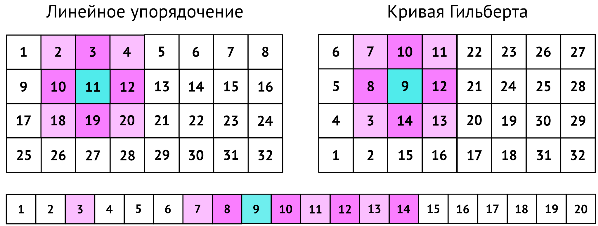

Упорядочение и индексация пространственных данных
Геоинформатика I
6 февраля 2025 г.
Хранение данных
Данные в файлах имеют одномерное упорядочение. Однако записи можно хранить так чтобы пространственно близкие располагались ближе друг к другу

Хранение данных
Данные в файлах имеют одномерное упорядочение. Однако записи можно хранить так чтобы пространственно близкие располагались ближе друг к другу
Генерация Z-кривой
Конвертировать в бинарное представление индексы ячеек \(u\) (по \(X\)) и \(v\) (по \(Y\)).
\[ \color{blue}{u = 10}, \color{red}{v = 10} \]
Расположить биты полученных значен ий вперемежку (через один):
\[ \color{violet}{w =} \color{blue}{1}\color{red}{1}\color{blue}{0}\color{red}{0} \]
Вычислить десятичный номер полученного значения
\[ \color{violet}{1100_2} \rightarrow \color{green}{12_{10}} \]
Генерация кривой Гильберта
- Конвертировать в бинарное представление индексы ячеек \(u\) и \(v\).
Генерация кривой Гильберта
Конвертировать в бинарное представление индексы ячеек \(u\) и \(v\).
Расположить биты полученных значений вперемежку (через один).
Генерация кривой Гильберта
Конвертировать в бинарное представление индексы ячеек \(u\) и \(v\).
Расположить биты полученных значений вперемежку (через один).
Разделить полученное число слева направо на двухбитные строки.
Генерация кривой Гильберта
Конвертировать в бинарное представление индексы ячеек \(u\) и \(v\).
Расположить биты полученных значений вперемежку (через один).
Разделить полученное число слева направо на двухбитные строки.
Сопоставить каждой двухбитной строке десятичную цифру \(d\) по правилам:
\[ \texttt{00} \rightarrow 0,~\texttt{01} \rightarrow 1\\\texttt{10} \rightarrow 3,~\texttt{11} \rightarrow 2 \]
Генерация кривой Гильберта
- Представить полученные значения \(d\) в виде списка (одномерного массива) \(D\).

Генерация кривой Гильберта
Представить полученные значения \(d\) в виде списка (одномерного массива) \(D\).
В цикле по \(k \leftarrow 0…n-1\), где \(n = |D|\):
если \(d_k = 0\), то для всех \(m > k\) заменить \(d_m = 1\) на \(3\), а \(d_m = 3\) на \(1\).
если \(d_k = 3\), то для всех \(m > k\) заменить \(d_m = 0\) на \(2\), а \(d_m = 2\) на \(0\).
Генерация кривой Гильберта
Представить полученные значения \(d\) в виде списка (одномерного массива) \(D\).
В цикле по \(k \leftarrow 0…n-1\), где \(n = |D|\):
если \(d_k = 0\), то для всех \(m > k\) заменить \(d_m = 1\) на \(3\), а \(d_m = 3\) на \(1\).
если \(d_k = 3\), то для всех \(m > k\) заменить \(d_m = 0\) на \(2\), а \(d_m = 2\) на \(0\).
Преобразовать каждую цифру в истинное 2-битовое представление
Генерация кривой Гильберта
Представить полученные значения \(d\) в виде списка (одномерного массива) \(D\).
В цикле по \(k \leftarrow 0…n-1\), где \(n = |D|\):
если \(d_k = 0\), то для всех \(m > k\) заменить \(d_m = 1\) на \(3\), а \(d_m = 3\) на \(1\).
если \(d_k = 3\), то для всех \(m > k\) заменить \(d_m = 0\) на \(2\), а \(d_m = 2\) на \(0\).
Преобразовать каждую цифру в истинное 2-битовое представление.
Вычислить искомый номер.
Генерация кривой Гильберта
Конвертировать в бинарное представление индексы ячеек \(i\) и \(j\).
Расположить биты полученных значений вперемежку (через один).
Разделить полученное число слева направо на двухбитные строки.
Сопоставить каждой двухбитной строке десятичную цифру \(d\) по правилам:
\[ \texttt{00} \rightarrow 0,~\texttt{01} \rightarrow 1,~\texttt{10} \rightarrow 3,~\texttt{11} \rightarrow 2 \]
Представить полученные значения \(d\) в виде списка (одномерного массива) \(D\).
В цикле по \(k \leftarrow 0…n-1\), где \(n = |D|\):
если \(d_k = 0\), то для всех \(m > k\) заменить \(d_m = 1\) на \(3\), а \(d_m = 3\) на \(1\).
если \(d_k = 3\), то для всех \(m > k\) заменить \(d_m = 0\) на \(2\), а \(d_m = 2\) на \(0\).
Преобразовать каждую цифру в истинное 2-битовое представление
Вычислить искомый номер.
Индекс
- Индекс
-
Специальный объект базы данных, предназначенный для повышения скорости поиска объектов
Состоит из ключей и указателей:
ключ — значение или интервал значений одного или более полей;
указатели — ссылки на кортежи с соответствующими значениями полей.
Принцип работы
Сначала ищется нужный блок индекса, затем непосредственно объект
Пространственный индекс
- Пространственный индекс
-
Индекс, предназначенный для поиска пространственных объектов
Повышает скорость запросов:
- Идентификации: определить объект(ы), находящиеся в точке
- Ближайшего соседа: найти все объекты в пределах заданного расстояния
- Диапазона: выбрать объекты по заданному охвату координат

Сеточный индекс (grid files)
Простейший вид индекса, который часто используется для точечных данных.
пространство разделяется линиями сетки на полосы — страйпы;
число линий и расстояние между ними может быть разным для осей;
точки индексируются по ячейкам — пересечениям полос
Принцип работы
Сначала ищутся нужные ячейки по диапазону координат. После этого запрос работает с точками из этих ячеек.
R-дерево (R-tree)
Основан на построении дерева ограничивающих прямоугольников со свойствами:
- Каждый лист дерева содержит от \(m\) до \(M\) записей, если он не является корнем дерева (\(m \leq M/2\)).
- Каждая запись индекса в листе содержит идентификатор объекта и его ограничивающий прямоугольник.
- Каждый нелистовой узел дерева содержит от \(m\) до \(M\) дочерних узлов, если не является корнем.
- Каждая запись индекса в нелистовом узле содержит идентификатор дочернего узла и прямоугольник, который ограничивает все его элементы.
- Корневой узел содержит как минимум два дочерних узла, если он не является листом.
- Все листья имеют один уровень иерархии (дерево сбалансированное).
\(M\) — параметр индекса
R-дерево (R-tree)
R-дерево (R-tree)
Основные факторы, влияющие на производительность R-дерева на каждом уровне иерархии:
Покрытие — общая площадь, покрытая ограничивающими прямоугольниками индекса.
Перекрытие — общая площадь, покрытая более чем одним прямоугольником.
Оптимизация
Дерево строится таким образом чтобы минимизировать и покрытие и перекрытие. При этом минимизация перекрытия является более приоритетной
Модификации R-дерева
Существуют модификации R-дерева, в которых объекты могут быть резделены прямоугольниками индекса на нелистовых уровнях. Например, R+
Библиография
Самсонов Т. Е. Геоинформатика: курс лекций